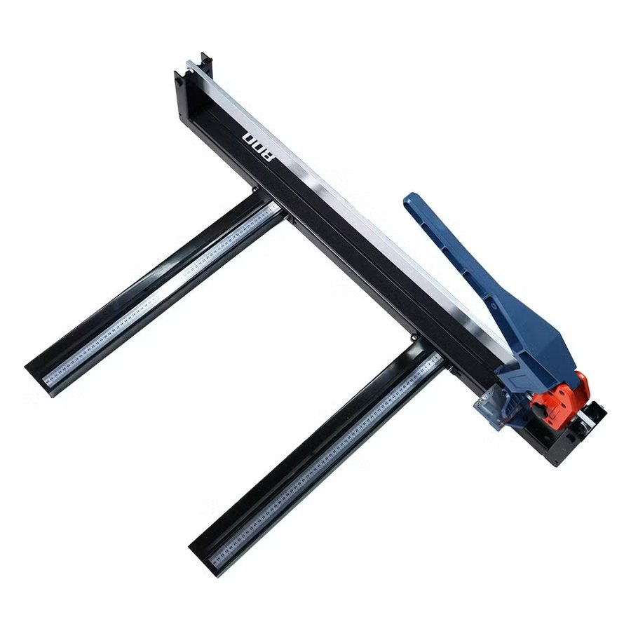

首页 / 混凝土、地面与装修施工设备 / 小型起重机/砌筑吊,履带底盘 (蜘蛛式),起重量约500公斤,臂展约8米

混凝土、地面与装修施工设备
小型起重机/砌筑吊,履带底盘 (蜘蛛式),起重量约500公斤,臂展约8米
紧凑型小型起重机,用于在狭窄工地和建筑内部吊运砌块、预制构件、窗户和板材。
小型起重机可在狭窄的内院、厂房以及穿过建筑洞口吊运砌块、混凝土预制构件、窗户、玻璃和板材,取代人工搬运和叉车。
技术参数
| 臂展 | 约 8 m(标价页),全臂展时起重量更低 |
|---|---|
| 底盘 | 履带底盘,窄身便于通过狭窄通道 |
| 支腿 | 带倾斜指示的液压支腿 |
| 安全装置 | 力矩限制器、带急停的无线遥控 |
| 海关编码（HS） | 84264900 |
欧盟标准与法规
2006/42/EG机械指令(2027年1月20日起适用机械法规(EU) 2023/1230),CE标志EN 13000起重机,移动式起重机EN 12077-2起重机,安全要求,限制和指示装置EN 60204-32起重机械电气设备DGUV Vorschrift 52起重机,投入使用前及定期检验义务
本类别其他产品
前进式平板夯,约90公斤,汽油发动机 (约5.5马力)坚固的前进式平板夯,用于压实沟槽、铺装层、基层及沥青修补处。
XPS挤塑保温板100毫米 (约1250 x 600毫米)高抗压挤塑聚苯乙烯硬质泡沫板,用于周边、勒脚及地面保温。
混凝土振动棒 (插入式振动器),电动230伏带振动头的电动插入式振动器,用于墙体、柱和楼板新拌混凝土的振捣密实。
抹灰机 (砂浆喷涂机),电动230/400伏用于机械抹灰的输送喷涂机,适用于室内外石膏抹灰和石灰水泥抹灰。
钢框模板 (墙模),单元约600 x 1200毫米可重复使用的框架式模板单元,用于现浇混凝土墙、柱和基础。
铝合金瓷砖收边条 (L型/收口条),2.5米铝合金护角和收口型材,用于翻新与装修中的瓷砖及墙面饰面。
可逆式平板夯,约400公斤,柴油发动机,液压前进/后退重型可逆式平板夯,用于基层、大面积铺装和场院地面以及深管沟的压实。
自动铺砖机,用于混凝土路面砖整层铺设在碎石垫层上快速、平整铺设路面砖和混凝土砖的设备,适用于大面积场院、道路和广场。
地面铲除机 (铲地板/瓷砖机),电动,手扶式电动铲除机,用于在翻新中快速铲除PVC、亚麻地板、地毯、胶层和瓷砖面层。
手扶式混凝土抹光机 (叶片式),汽油发动机,直径约900毫米手扶式抹光机,用于对新浇筑的混凝土地面和找平层进行抹平和压实收光。
带支撑的楼板模板系统 (H20木工字梁、钢制楼板支撑、叉头)带可调钢支撑的梁式楼板模板,用于房建和翻新中的现浇混凝土楼板。
钢制工作支架/脚手架马凳,镀锌,高度可调 (每件)承重钢制马凳,用于抹灰、地面找平和装修作业中支撑工作平台和脚手板。
矿物棉保温材料 (岩棉板/保温毡),100毫米,导热系数等级035不燃矿物棉保温材料,用于屋顶、墙体、楼板和干式隔墙,兼具保温、隔声和防火性能。
瓷砖找平系统套装 （卡扣、楔子、钳子）由拉片、楔子和安装钳组成的找平系统，用于 1–3 mm 缝宽下的平整铺砖。
抹灰机易损件套装
平板夯用聚氨酯保护垫 （螺栓固定）螺栓固定的浇注聚氨酯保护垫，在夯实时保护铺路石和铺板免受划伤和压痕。
混凝土插入式振动器备用振动棒 （含软轴, Ø35/45 mm, 1.5–6 m）淬硬钢振动棒，带软轴和保护软管，作为电动插入式振动器的备件。
混凝土搅拌机 140 升 （230 伏, 0.5 马力），钢制滚筒自落式带轮移动式自落式搅拌机，140 升钢制滚筒，230 伏电机，适合工地和院落的砂浆与混凝土搅拌。
汽车泵 （泵车）约38米臂架垂直臂架高度38.1米、理论排量最高160立方米/小时的汽车泵，适用于房建与现浇混凝土施工。
混凝土搅拌站 （固定式）约60立方米/小时
混凝土搅拌运输车 10立方米10立方米搅拌罐的搅拌运输车，用于将预拌混凝土从搅拌站运至工地。
混凝土制砖机 （砌块、铺路砖、路缘石）固定式混凝土制砖机，可生产空心砌块、铺路砖、透水砖和路缘石，成品高度最高300毫米。
铝合金刮尺,2米,H型用于找平砂浆、抹灰和混凝土的轻质铝合金刮尺。

手动瓷砖切割机1200毫米适用于最长1200毫米大规格瓷砖的手动导轨式切割机。

电动无气喷涂机用于墙面和天花板涂料的电动高压无气喷涂机。
混凝土大抹板 (带杆)用于压实并抹平新摊铺混凝土的大面积抹板。

地面铣刨机250毫米 (电动)手推式铣刨机,用于清除混凝土上的涂层、环氧和标线。
盘式搅拌机350升 (电动)用于砂浆、混凝土和找平层的立轴盘式搅拌机。
混凝土修边器 (不锈钢,弧形)用于圆化并压实混凝土边缘的手工工具。